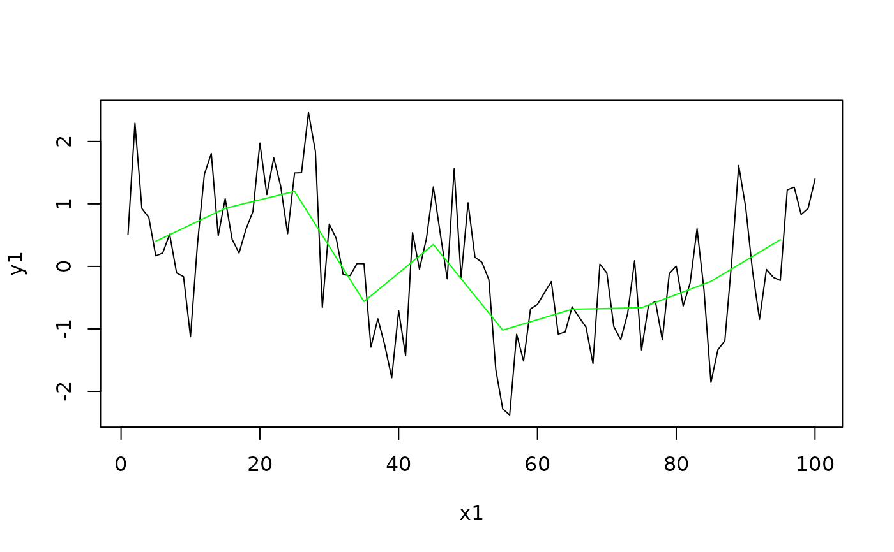
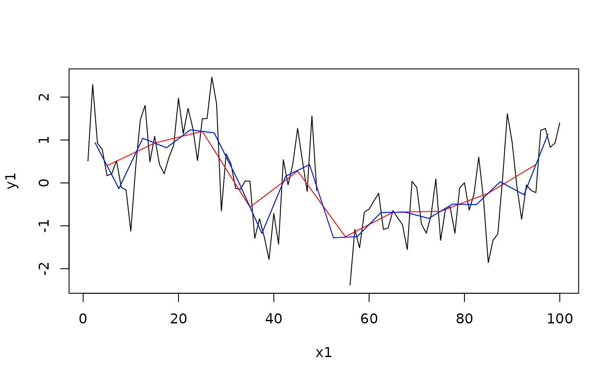

Bin averaging
AvgToBin.RdAverage a vector into bins.
Usage
AvgToBin(x, y, N = 2, breaks = pretty(x, N), right = TRUE, bFill = FALSE)Arguments
- x
vector of values on which the data in
yis tabulated; e.g. depth or time points.- y
vector of observation values to be averaged into bins. Must have the same length as
x.- N
desired number of breaks (ignored if
breaksare supplied directly).- breaks
vector of break point positions to define the averagig bins; if omitted, break point positions are calculated from the range of
xand the desired number of breaks given byN.- right
logical; indicate whether the bin intervals should be closed on the right and open on the left (
TRUE, the default), or vice versa (FALSE).- bFill
logical; if
TRUE, fill empty bins using linear interpolation from the neighbours to the center of the bin.
Value
a list with four elements:
breaks:numeric vector of the used break point positions.
centers:numeric vector with the positions of the bin centers.
avg:numeric vector with the bin-averaged values.
nobs:numeric vector with the number of observations contributing to each bin average.
Details
This function averages the vector y into bins according to the positon
of x within the breaks. You can either specify a desired number N of
breaks which are used to calculate the actual breaks via pretty(x, N),
or directly specify the N + 1 break positions. For right = TRUE (the
default) the averaging bins are defined via x > breaks[i] and x
<= breaks[i + 1], else they are defined via x >= breaks[i] and
x < breaks[i + 1]. If bFill = TRUE, empty bins are filled using
linear interpolation from the neighbours to the center of the bin.
Probably the binning could be considerably speeded up by using ?cut.
Examples
N <- 100
x1 <- seq(1, N, by = 1)
y1 <- SimPLS(N, a = 0.1, b = 1)
plot(x1, y1, type = "l")
y2 <- AvgToBin(x1, y1, 13)
lines(y2$centers, y2$avg, col = "green")

#Add some NA values to the timeseries
y1[(N/2):(N/2 +5)] <- NA
plot(x1, y1, type = "l")
y2 <- AvgToBin(x1, y1, 25)
lines(y2$centers, y2$avg, col = "green")
# Large enough bins will average across the gap
y3 <- AvgToBin(x1, y1, 10)
lines(y3$centers, y3$avg, col = "red")
# Or interpolate to nearest neighbour
y3 <- AvgToBin(x1, y1, 25, bFill = TRUE)
lines(y3$centers, y3$avg, col = "blue")
